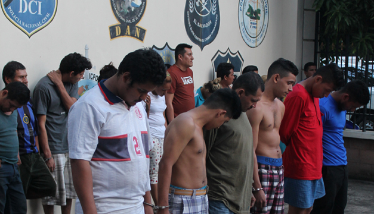

Mareros capturados en operativo policial
Más de 30 mareros capturados en operativo que se desarrolló en 5 municipios del país. Entre ellos están dos lideres de las pandillas.
El operativo se dio en la madrugada y fue coordinada por la alcaldía de San Salvador con la PNC. En el operativo participaron más de 50 elementos policiales.
El alcalde de San Salvador dijo que era el mayor operativo que se había dado en la historia de El Salvador. Lastimosamente, la violencia sigue en alza en nuestro país, y por el momento no se mira una solución ante dicho problema.